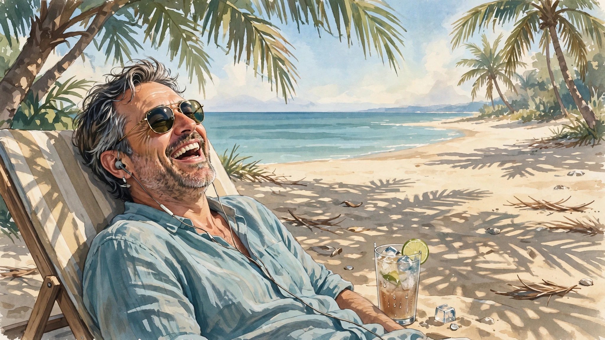

你以为的过气悲情励志歌手其实是幽默豁达的人生赢家
欢迎点击上方名片关注我的公众号。
（贴一篇旧文，写于去年初冬。略有删改。）
一天在外面晒太阳，听了《日谈公园》的一期播客。这期节目是对久违大众视线、携新专辑归来的音乐人郑智化的一次访谈。郑智化算是我比较熟悉但还谈不上热爱的一位实力派歌手。他那些脍炙人口的歌，如《水手》、《星星点灯》，我也颇能哼上几句。在听这期播客之前，我其实早在油管上刷到他的新专辑主打歌《那烂陀》的MV。当时打开看了一两分钟没看完就关掉了。一个原因是觉得题材不感冒（宗教类的作品这几年大多有点俗套嫌疑），另一个就是单纯觉得旋律不动听。我承认这两年我的心态有些浮躁。甚至到了看视频听播客都要倍速的地步。所以很难静下心来欣赏一部作品。今天借着这期播客，我重新认识了归来的郑智化。

访谈的主要内容当然是围绕着郑智化的新专辑，顺便也有一些怀旧的回忆和抒情。但我和主持人一样没料到，与其有时悲情有时励志，甚至有时哲思的风格大不相同，现实中的郑智化是一个相当热情、幽默和随和的人。
45岁的主播李志明虽是资深记者，但面对63岁的资深艺人同时也是自己青年“偶像”（其自称）的郑智化时仍显得有些谨慎。播客前半段主播提的问题多是基于自己对郑歌曲的主观感受加上自己的人生体验，但郑智化的许多回答都出乎意料。例如，主播在有些歌曲中听出了“倔强”、“不服输”，但郑智化说他就是个“服输”的人，也不怎么”倔强”（年轻时可能有点）；而有些歌主播说听出了“暗恋”的感觉，并结合了自身的一些经历。结果被郑智化“无情嘲笑”，怎么你还暗恋过别人?我可从来没有(贱贱地暗示自己很有“女人缘”)。除了和主播调侃外，郑智化还拿一些平台上对他的歌进行“解读”的UP主开涮。 例如，《水手》中有一句歌词：年少的我喜欢一个人在海边。郑智化说，我自己从不喜欢去海边，更喜欢去“床边”——更喜欢睡觉，再就是和一帮朋友hang around，还说，抖音上有人硬是解读成，我喜欢去海边是因为那里有比基尼女郎……
（不好意思本想与大家分享水手这首歌，但只有DJ版是免费的。希望不要觉得太吵，感受一下旋律就好了。）
除了轻松调侃的风格外，郑智化还有一些令人意外的秘密。例如，他特别喜欢看体育比赛，曾经为北京申办奥运加油呐喊。还有，他说自己其实偏爱写舞曲，为别人写，虽然未曾发表。这些其实跟他幼年残疾的事有关，由于缺乏健全的躯体，他就一直很渴望运动健将的潇洒和舞者的灵动。
总之，一场访谈下来，不光是主播，像我这样早年就开始听他歌的听众(包括粉丝和路人)对他都有了全新的认识。而我个人，甚至都有点“路转粉”了。因为我喜欢他的人生态度，豁达、乐观、不苟且。 为了推出自己满意的作品，不惜打磨数十年。如果没有听过这期播客，我可能会觉得这些是营销话术。但他的一番话彻底打消了我的疑虑。他提到，他三十年前写的那些“爆款”歌曲，直到现在还有人在听，这简直是个奇迹。主播问他怎么知道的，他说歌曲带来的收入就是明证。主播恍然大悟，原来是流水(流量)啊。这也从侧面告诉我们，创造“奇迹”式畅销作品的作者，收入流是十分稳定的。所以，他也没必要费尽心思推出什么“数十年磨一剑”的新作，更别提搞什么“营销话术”了。
一个63岁的人，功成名就，收入不错，还能带新作品“复出”，这是什么精神（为人民服务?——划掉)？潇洒走一回！人生就该这么过!